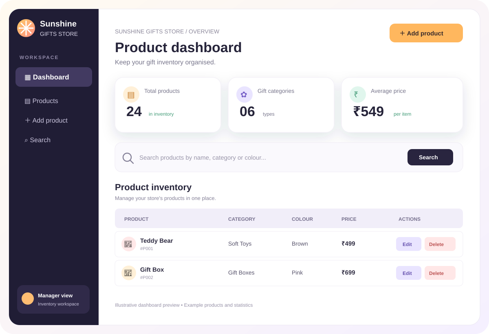
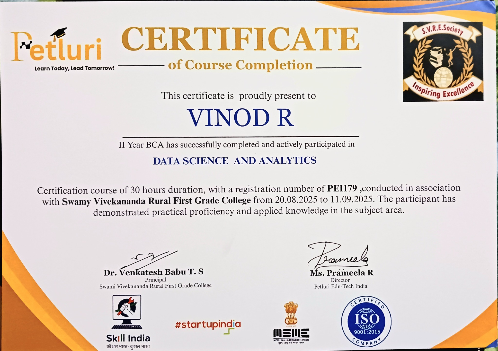
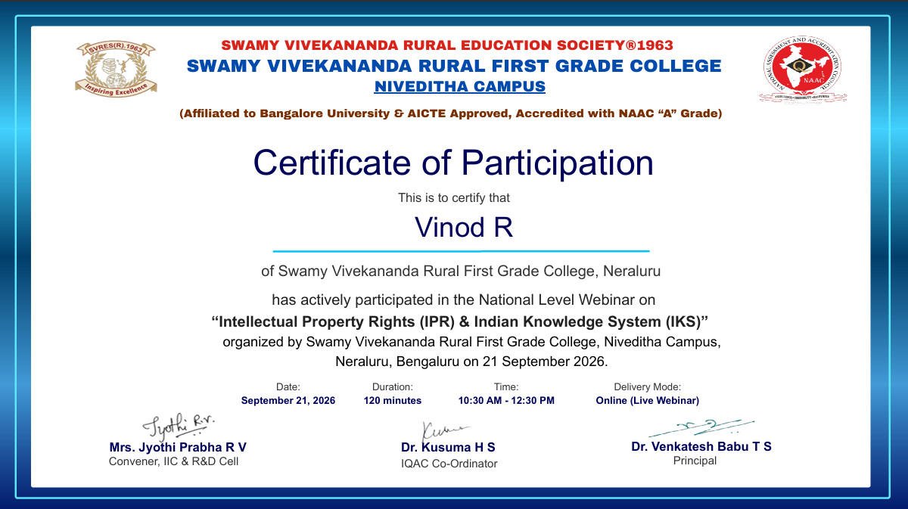

Frontend
Creating responsive interfaces and interactive webpages.
Open to learning & opportunities
A 3rd-year BCA student exploring Full Stack Development and Cybersecurity. I enjoy building applications, debugging problems, and learning how to make digital experiences useful and secure.
01 — About me
I’m Vinod R, a 3rd-year BCA student at Swamy Vivekananda Rural First Grade College, working toward becoming a Full Stack Developer.
I enjoy building applications and learning by actually creating things. I’m comfortable working through errors, debugging problems and staying focused until I understand what went wrong.
I value teamwork, discipline and being supportive in group projects. My goal is to keep improving my technical foundation while building projects that are practical, useful and well designed.
02 — Education
Focused on computer applications, programming, web technologies, databases, software development and practical project work.
03 — Technical skills
Creating responsive interfaces and interactive webpages.
Building logic, solving problems and developing application features.
Learning server-side development and creating API-driven applications.
Using modern development tools to build, test and manage projects.
Working with structured data and learning database-backed applications.
Using AI tools as development assistants for learning, debugging and ideation.
04 — Featured work
A social connectivity project focused on bringing people together through a digital platform. The project is currently being developed and refined as a practical application.
A full-stack gift shop management dashboard built to manage product inventory. The manager can add, view, update, search and delete products through a responsive interface connected to a Flask REST API and SQLite database.

05 — Experience
I have not completed a formal internship yet. I’m interested in opportunities where I can contribute to real projects, learn from experienced developers and strengthen my full-stack development skills.
Contact me about an opportunity →07 — Security learning path
Exploring core security principles, common threats, and safe computing practices.
Learning how to recognize common web risks and build safer web applications.
Developing foundational knowledge of networks and responsible, authorized security testing.
These are learning interests, not claims of professional cybersecurity experience. I plan to add hands-on labs and documented security projects as I complete them.
08 — Certificates

Course completion certificate issued through Petluri in association with Swamy Vivekananda Rural First Grade College.

Participation certificate for the webinar held on 21 September 2026.
09 — Achievements
Participated in a debugging competition at college, strengthening practical problem-solving and error-finding skills.
Completed a 30-hour course in Data Science and Analytics; the certificate is available in the Certificates section.
Building projects alongside academic learning to gain practical development experience.
10 — Code & repositories
Explore my repositories, project experiments and development work.
11 — Contact
Whether it is a project, internship opportunity, collaboration or just a conversation about technology, feel free to reach out.
vinod1085r@gmail.com